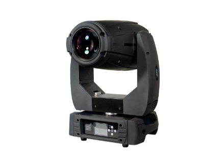

Color Imagination LEDSPOT 300Z
Артикул: SI-071N
260 400.00 руб
LEDSPOT 300Z Cветодиодная «вращающаяся голова» моторизированный линейный зум
от 3° до 50°, индексация гобо
(1*300W 7500K White LED, DMX), 17CH/15CH
Категории: SPOT, Приборы с полным движением Moving Heads